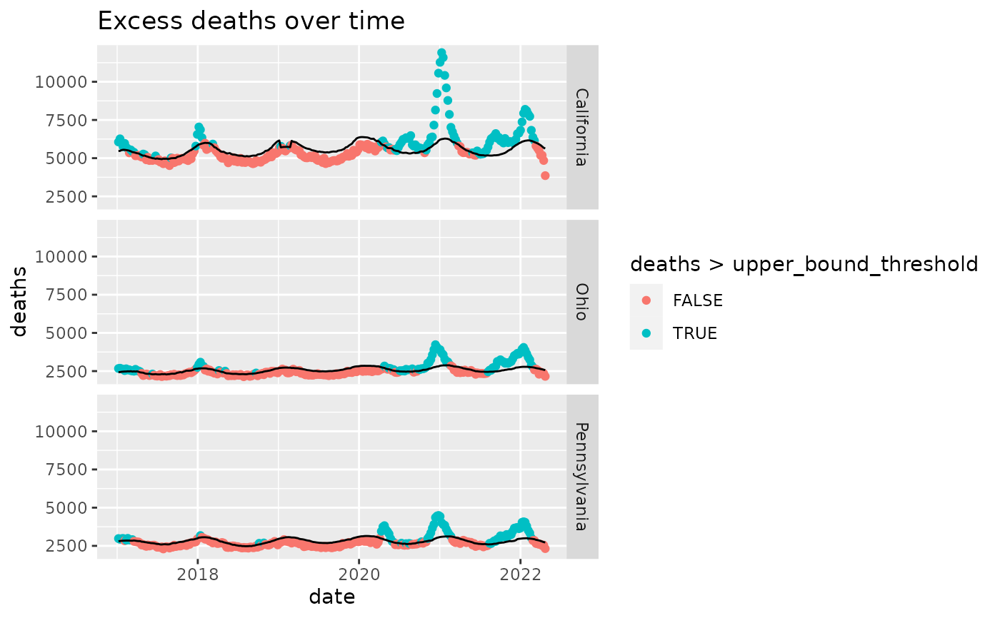

R/cdc_excess_deaths.R
cdc_excess_deaths.RdUnderstanding the potentially unmeasured death toll due to COVID-19 starts with understanding the expected vs observed death rates over time. This dataset presents observed and expected deaths by state by week of year for 2018 to present. In addition, the dataset can be broken down into all cause death and that attributable to COVID-19 based on reported COVID-19 deaths.
cdc_excess_deaths()a data.frame
Estimates of excess deaths can provide information about the burden of mortality potentially related to COVID-19, beyond the number of deaths that are directly attributed to COVID-19. Excess deaths are typically defined as the difference between observed numbers of deaths and expected numbers. This visualization provides weekly data on excess deaths by jurisdiction of occurrence. Counts of deaths in more recent weeks are compared with historical trends to determine whether the number of deaths is significantly higher than expected.
Estimates of excess deaths can be calculated in a variety of ways, and will vary depending on the methodology and assumptions about how many deaths are expected to occur. Estimates of excess deaths presented in this webpage were calculated using Farrington surveillance algorithms (1). For each jurisdiction, a model is used to generate a set of expected counts, and the upper bound of the 95% Confidence Intervals (95% CI) of these expected counts is used as a threshold to estimate excess deaths. Observed counts are compared to these upper bound estimates to determine whether a significant increase in deaths has occurred. Provisional counts are weighted to account for potential underreporting in the most recent weeks. However, data for the most recent week(s) are still likely to be incomplete. Only about 60% of deaths are reported within 10 days of the date of death, and there is considerable variation by jurisdiction. More detail about the methods, weighting, data, and limitations can be found in the Technical Notes.
Other data-import:
acaps_government_measures_data(),
acaps_secondary_impact_data(),
apple_mobility_data(),
beoutbreakprepared_data(),
cci_us_vaccine_data(),
cdc_aggregated_projections(),
cdc_social_vulnerability_index(),
coronadatascraper_data(),
coronanet_government_response_data(),
cov_glue_lineage_data(),
cov_glue_newick_data(),
cov_glue_snp_lineage(),
covidtracker_data(),
descartes_mobility_data(),
ecdc_data(),
econ_tracker_consumer_spending,
econ_tracker_employment,
econ_tracker_unemp_data,
economist_excess_deaths(),
financial_times_excess_deaths(),
google_mobility_data(),
government_policy_timeline(),
jhu_data(),
jhu_us_data(),
kff_icu_beds(),
nytimes_county_data(),
oecd_unemployment_data(),
owid_data(),
param_estimates_published(),
test_and_trace_data(),
us_county_geo_details(),
us_county_health_rankings(),
us_healthcare_capacity(),
us_hospital_details(),
us_state_distancing_policy(),
usa_facts_data(),
who_cases()
Other excess-deaths:
economist_excess_deaths(),
financial_times_excess_deaths()
cdcdeaths = cdc_excess_deaths()
head(cdcdeaths)
#> # A tibble: 6 × 12
#> date state deaths upper_bound_thres… exceeds_thresho… average_expecte…
#> <date> <chr> <dbl> <dbl> <lgl> <dbl>
#> 1 2017-01-07 Alabama 1121 1164 FALSE 1090
#> 2 2017-01-14 Alabama 1130 1165 FALSE 1091
#> 3 2017-01-21 Alabama 1048 1166 FALSE 1089
#> 4 2017-01-28 Alabama 1026 1163 FALSE 1087
#> 5 2017-02-04 Alabama 1036 1164 FALSE 1088
#> 6 2017-02-11 Alabama 1058 1160 FALSE 1085
#> # … with 6 more variables: excess_estimate <dbl>, type <chr>, outcome <chr>,
#> # suppress <chr>, note <chr>, week_of_year <dbl>
colnames(cdcdeaths)
#> [1] "date" "state" "deaths"
#> [4] "upper_bound_threshold" "exceeds_threshold" "average_expected_count"
#> [7] "excess_estimate" "type" "outcome"
#> [10] "suppress" "note" "week_of_year"
table(cdcdeaths$outcome)
#>
#> All causes All causes, excluding COVID-19
#> 28404 14202
# Examine excess deaths in three states
library(ggplot2)
library(dplyr)
interesting_states = c('Ohio', 'Pennsylvania', 'California')
ggplot(cdcdeaths %>% dplyr::filter(type=="Predicted (weighted)" &
outcome=="All causes" &
state %in% interesting_states),
aes(x=date,y=deaths)) +
geom_point(aes(color=deaths>upper_bound_threshold)) +
geom_line(aes(x=date,y=upper_bound_threshold)) +
facet_grid(rows=vars(state)) +
ggtitle('Excess deaths over time')
